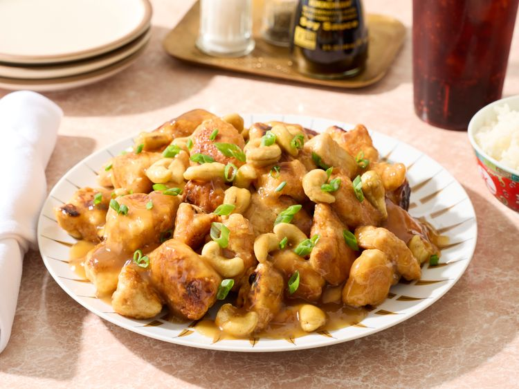

Springfield Style Cashew Chicken

Springfield, Missouri, gave America Route 66—and Springfield-style cashew chicken, a regional classic invented by Chinese immigrant chef David Leong. This recipe delivers the dish's signature contrast: crispy fried chicken under a silky, savory gravy with roasted cashews.
Ingredients
- 2 pounds chicken breast, diced into 1-inch pieces
- 2 cups all-purpose flour
- 1 tablespoon seasoned salt
- 1 teaspoon ground white pepper
- 2 tablespoons granulated garlic
- 1/2 teaspoon cayenne pepper (optional)
- 3 large eggs
- 3 cups milk
- 1/4 cup extra-virgin olive oil, or as needed
- 4 ounces cashew nuts
- 4 ounces chopped green onions
For The Sauce
- 3 1/2 cups chicken broth
- 1/2 teaspoon salt
- 1/2 teaspoon sugar
- 1/4 cup soy sauce
- 2 tablespoons oyster sauce
- 1 pinch ground ginger
- 1/8 teaspoon sesame oil
- 1/4 cup cornstarch
- 1/4 cup water
Steps
- Mix the flour, seasoned salt, ground white pepper, granulated garlic, and cayenne pepper (if using).
- In another medium bowl, whisk the eggs and add the milk, seasoned salt, and white pepper.
- Coat the diced chicken pieces in the flour mixture, then dip them into the milk batter and coat them again in the flour mixture.
- Place the breaded chicken pieces on a cookie sheet until ready to fry.
- Heat the olive oil in a large skillet over medium heat.
- Fry the chicken pieces in batches until golden brown and cooked through, about 3 to 5 minutes per side.
- Remove the chicken from the skillet and place it on a paper towel-lined plate to drain excess oil.
- Combine the chicken broth, salt, sugar, soy sauce, oyster sauce, ground ginger, and sesame oil in a medium saucepan. Bring to a boil.
- Mix the cornstarch with water in a small bowl to create a slurry.
- Slowly add the slurry to the boiling mixture, whisking constantly until the sauce reaches a gravy-like consistency. Stir in cashews.
- Place the fried chicken pieces on a serving platter and pour the cashew chicken sauce over the chicken. Serve with a side of plain or fried rice and steamed vegetables.
Home